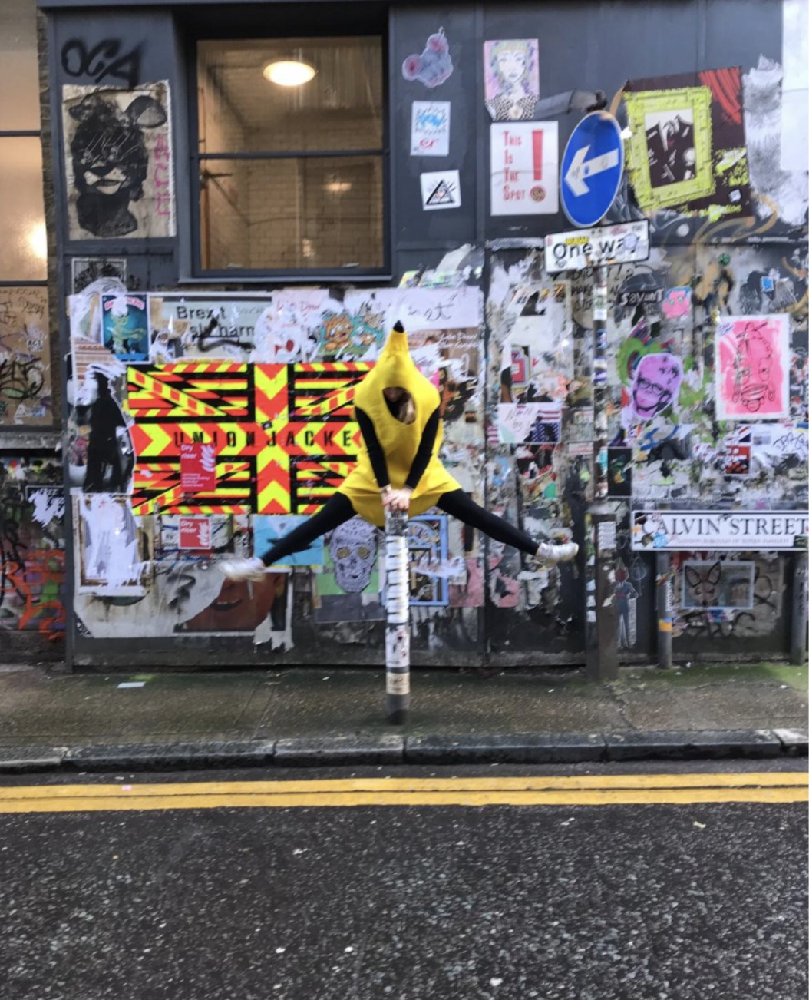
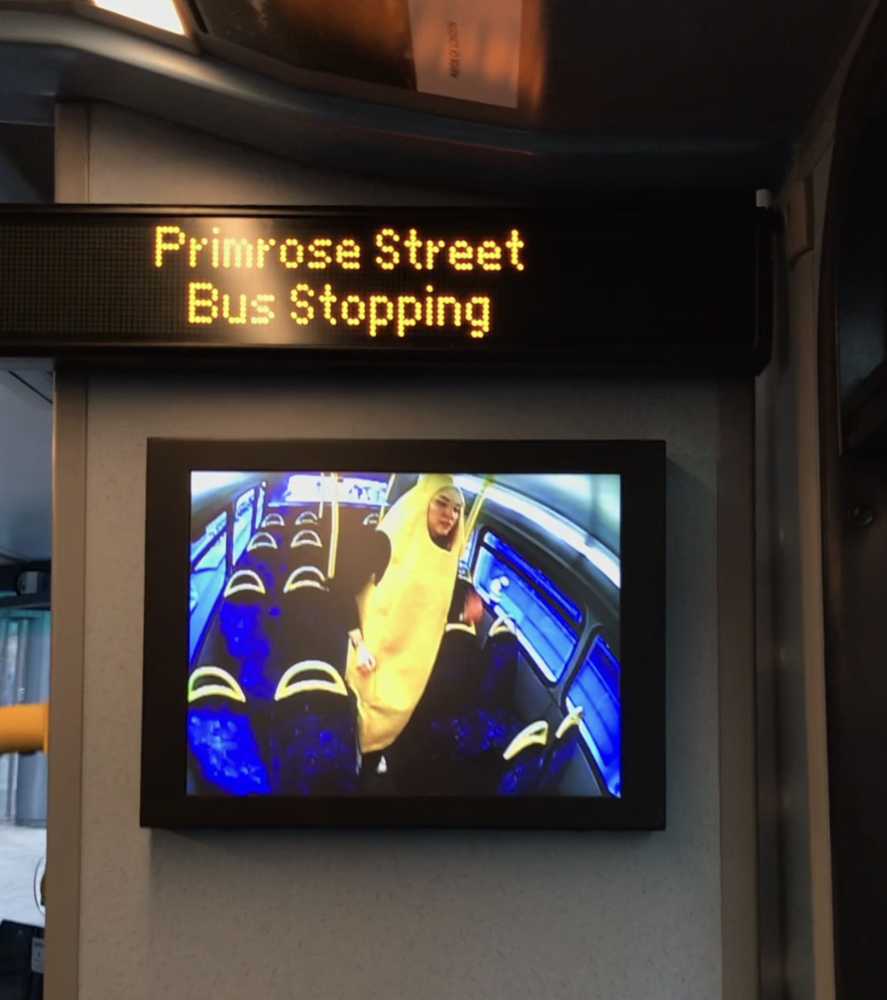

I’m interested in unblurring the line between the individual and society by replacing passivity and doubt with a faithful affirmation of the self. I want to create situations deliberately constructed for the purpose of reawakening and pursuing authentic desires, experiencing the feeling of life, adventure and the liberation of everyday life. I use performance to question the established order and create my own moments of truth.
Below is the publicationn of the project along my fellow classmates Click to go directly to the page this project is on